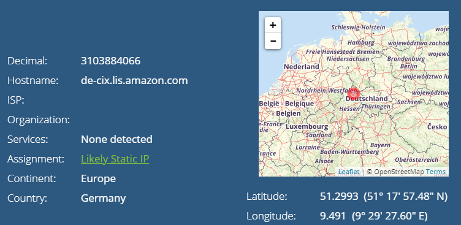
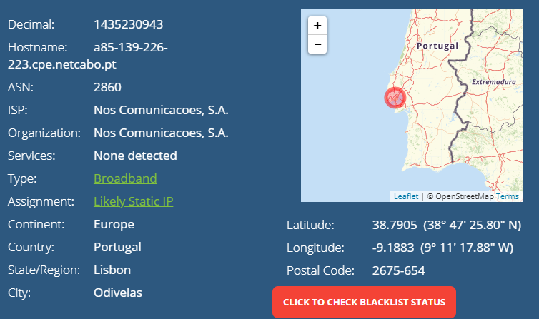
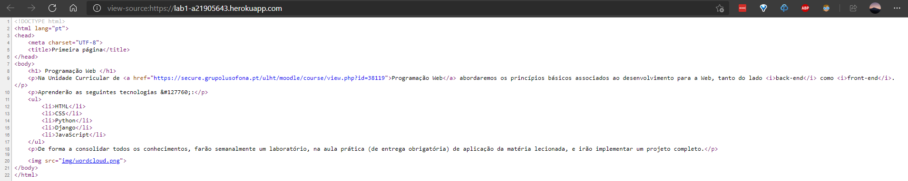
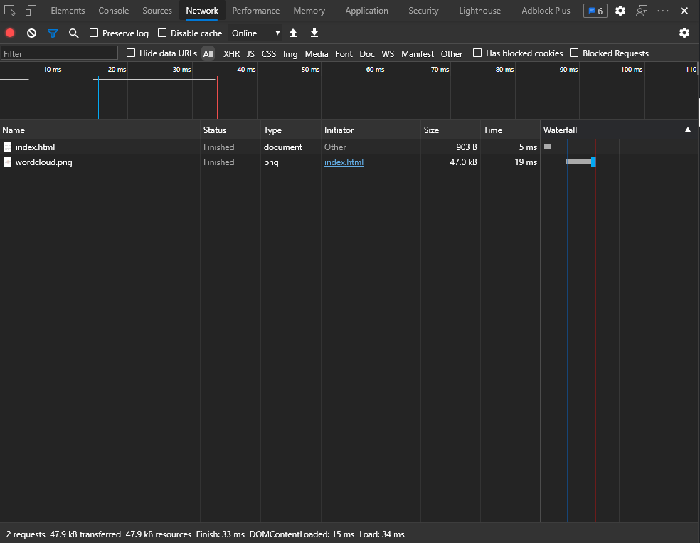

Criou-se o ficheiro 'index.html' com o código fonte HTML.
Adicionou-se a imagem 'wordcloud.png' na pasta img.
Criou-se o repositório pw-lab1, colocando neste todos os ficheiros anteriormente criados.
Criaram-se os ficheiros 'index.php' e 'composer.json' para o heroku conseguir ler o ficheiro html e corrê-lo.
Adicionaram-se os novos ficheiros criados ao repositório.
Criou-se uma conta no Heroku e uma app apartir do repositório dentro deste.
O endereço IP do meu computador é 85.139.226.223.
O endereço IP do meu computador está localizado em Odivelas, Lisboa, Portugal, Europa.
O endereço IP do servidor Heroku onde está a app é 185.1.131.34.
O endereço IP do servidor Heroku onde está a app está localizado na Alemanha, Europa.
GeoTraceroute de lab1-a21905643.herokuapp.com
Percurso:
Acedeu-se ao código-fonte da página:
Inspecionou-se a network da página:
Na sequência de um clique num hiperlink foram descarregados 34 ficheiros.
Ficheiros:
| Nome | Tipo | Tamanho | Timing de espera |
| lab1-a21905643.herokuapp.com | document | 903 B | 1 ms |
| wordcloud.png | png | 47 kB | 3 ms |
Selecionando cada um dos ficheiros, observa-se: